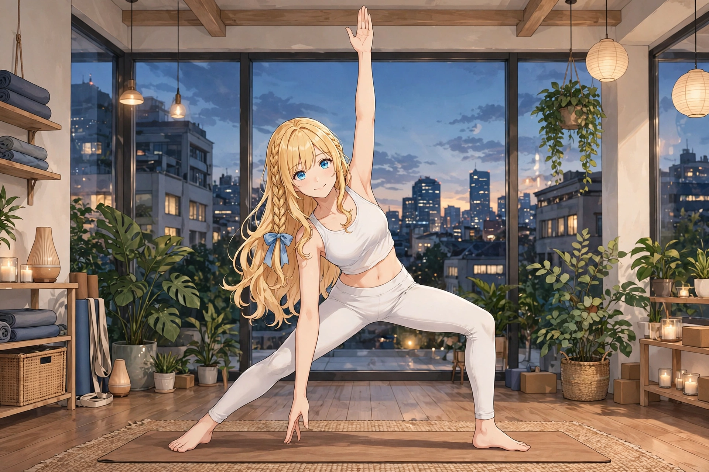
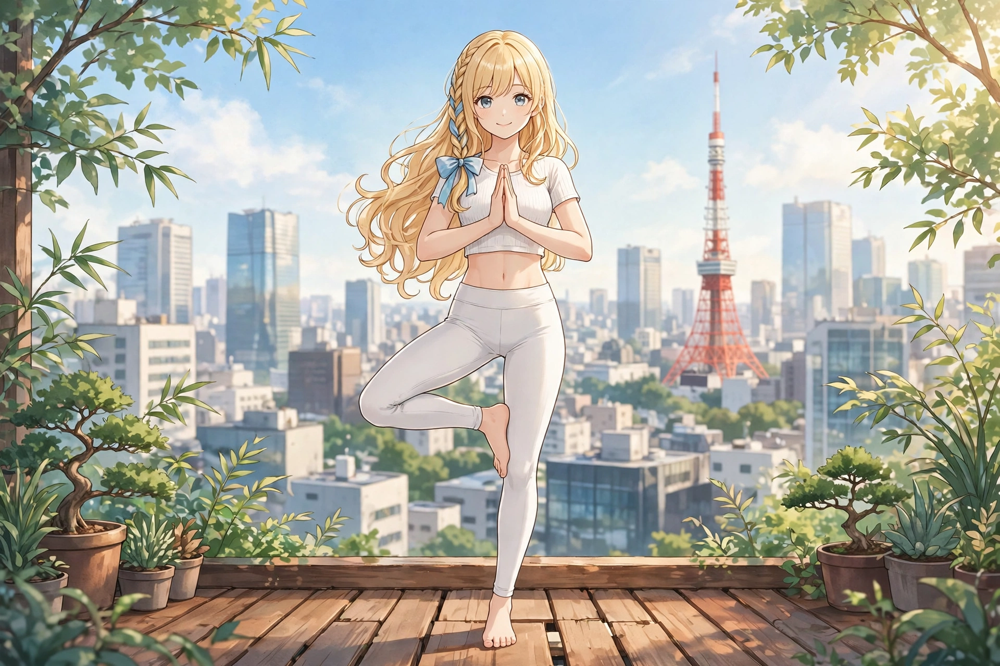

ホットヨガスタジオ LAVA 栄店
ホットヨガ栄男女共用
男女共用のホットヨガ専門店です。60分のレッスンが中心で、ヨガベーシックやリラックスヨガ、部位を意識したクラスなど種類が多く、マシンピラティスも併設しています。定休日は毎週木曜です…

名古屋でヨガスタジオを探すとき、まず決めたいのは「どの駅で通うか」です。このポータルで掲載中の愛知県のスタジオは8店。名古屋駅・栄・金山・久屋大通の4エリアに集まっていて、いずれも駅から徒歩1〜7分の範囲です。ホットヨガの大手から少人数制の個人スタジオまでそろっているのが名古屋の特徴です。この記事では、掲載データをもとにエリアごとの傾向と、目的に合った選び方を整理しました。
名古屋の掲載店8店は、名駅3店・栄3店・金山1店・久屋大通1店に分かれています。名駅にはロイブ名古屋店（名古屋駅ミヤコ地下街4番出口より徒歩1分）、スタジオ・ヨギー名古屋（ミヤコ地下街2番出口より徒歩30秒）、スタジオリベラ名駅スタジオ（名古屋駅より徒歩5分）があります。栄にはLAVA栄店（栄駅8番出口直結）、岩盤ホットヨガスタジオSola栄スタジオ、ヨガスタジオMySOUL8栄ミナミスタジオ（矢場町駅より約7分）があります。金山駅北口から徒歩1分のSANTOSHA YOGA金山ヨガスタジオと、久屋大通駅1A出口のヨガラボ名古屋もあり、まずは通いやすい駅を決めると候補が絞りやすくなります。
ホットヨガは4店です。LAVA栄店は男女共用で、60分のレッスンが中心。ヨガベーシックやリラックスヨガ、部位を意識したクラスなど種類が多く、マシンピラティスも併設しています。ロイブ名古屋店とスタジオリベラ名駅スタジオは女性専用で、ロイブはホットヨガのほかピラティスやエクササイズ、ダンス系まで幅広いプログラムがあり、リベラはスタッフ・インストラクター全員女性と案内され、全スタジオの相互利用ができます。岩盤ホットヨガスタジオSola栄スタジオも女性専用で、岩盤ルームでのレッスンを完全予約制で行っています。女性専用の落ち着いた環境で受けたい人はこの3店が候補になります。
常温ヨガは4店です。スタジオ・ヨギー名古屋はヨガ・ピラティス・骨盤（ペルヴィス）ワークを組み合わせ、ヨガは段階別に分かれ、名古屋限定の「二十四節気ヨガ」もあります。SANTOSHA YOGA金山ヨガスタジオは個人運営の少人数制で、プロップスを使いながら一つひとつのポーズを丁寧に行う指導を案内し、初級・中級のグループレッスンとプライベートレッスンがあり、男性も歓迎と明記されています。ヨガラボ名古屋は常温ヨガとエアリアルヨガを行う個人スタジオで、スタジオレッスンは少人数制のセミプライベート形式、マンツーマンのプライベートレッスンもあり、マットは無料貸出です。ヨガスタジオMySOUL8栄ミナミスタジオはアシュタンガヨガ系の早朝マイソールプログラムなどに加え、オンラインの「宅配ヨガ」もあり、RYT200指導者養成講座も行っています。
名古屋の掲載店では、ホットヨガはLAVA栄・ロイブ名古屋・リベラ名駅・Sola栄の4店。温かいスタジオでたっぷり汗をかく感覚が好きな人に向いています。岩盤ホットヨガのSolaは、岩盤ルームの温かさで受ける形です。常温はスタジオ・ヨギー名古屋・SANTOSHA金山・ヨガラボ・MySOUL8の4店で、少人数制や専門性の高い店が多く、自分のペースでポーズを確認しながら進めたい人に合っています。迷ったら、まず体験レッスンで室温の感じを確かめるのがおすすめです。
掲載店の体験は、LAVA栄店とロイブ名古屋店が0円（手ぶら体験と公式サイトに記載）、Sola栄スタジオが岩盤ホットヨガ体験500円（税込）、スタジオ・ヨギー名古屋が体験クラス通常1,000円、SANTOSHA金山が体験レッスン2回券2,000円、ヨガラボ名古屋がスタジオレッスン体験2回3,300円など、始めやすい価格がそろっています（いずれも公式記載の要約で、条件は公式サイトで確認してください）。リベラ名駅とMySOUL8は体験の受付を公式サイトで案内していますが、料金は公式サイトで確認する形です。服装や持ち物は体験の案内に従えばよく、最初から道具をそろえる必要はありません。
男女共用のホットヨガ専門店です。60分のレッスンが中心で、ヨガベーシックやリラックスヨガ、部位を意識したクラスなど種類が多く、マシンピラティスも併設しています。定休日は毎週木曜です…
女性専用のホットヨガスタジオです。ホットヨガのほか、ピラティス、エクササイズ、ダンス系まで幅広いプログラムがあり、定休日は毎週月曜です。…
ヨガ・ピラティス・骨盤（ペルヴィス）ワークを組み合わせる全国展開のスタジオです。ヨガは段階別に分かれ、名古屋限定の「二十四節気ヨガ」もあります。…
女性専用の岩盤ホットヨガスタジオです。岩盤ルームで、初心者から経験者まで目的に合わせて選べるレッスンを案内しています。完全予約制で、定休日は金曜です。…
個人運営の少人数制スタジオです。プロップスを使いながら一つひとつのポーズを丁寧に行う指導を案内し、初級・中級のグループレッスンとプライベートレッスンがあります。男性も歓迎と明記され…
個人スタジオです。常温ヨガとエアリアルヨガを行い、スタジオレッスンは少人数制のセミプライベート形式です。マンツーマンのプライベートレッスンもあり、マットは無料貸出です。…



あわせてチェック｜Simple Yoga Lifeのおすすめ
・特集：韓国ヨガウェア（ゼクシーミックス）…人気レギンスや上下セットを、楽天の実測価格とあわせて紹介しています
・セラフィナのスタンプ＆おうちヨガ用品コーナー…マットやブロックなどのおうちヨガ用品と、LINEスタンプをまとめています